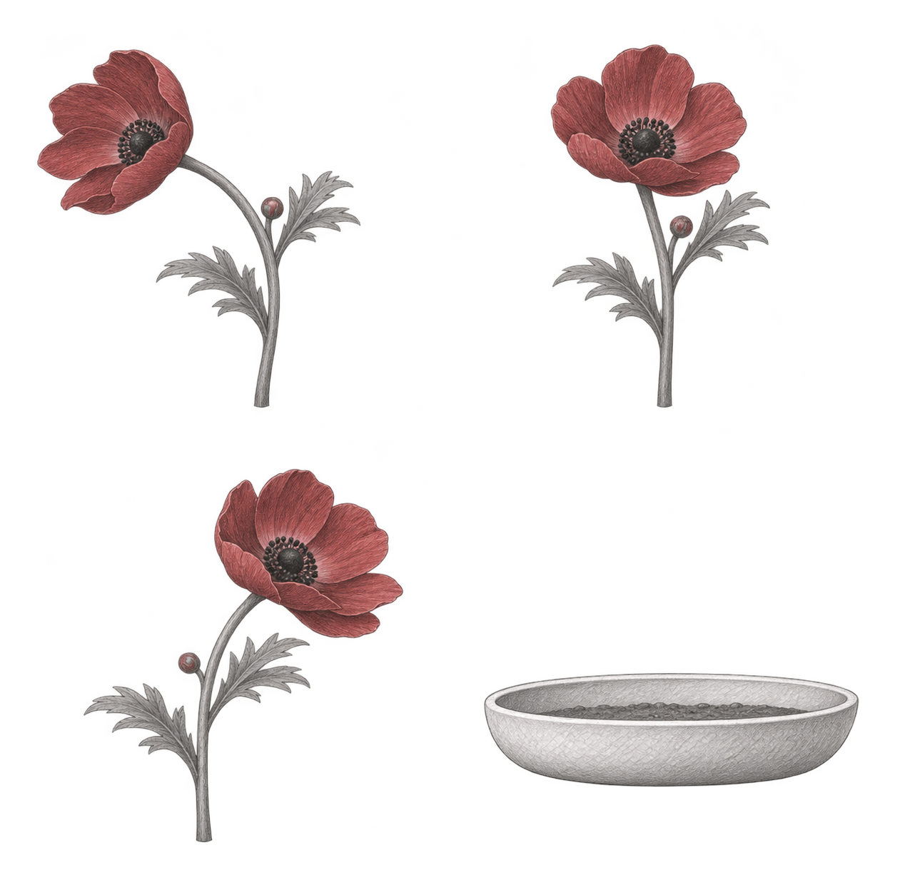
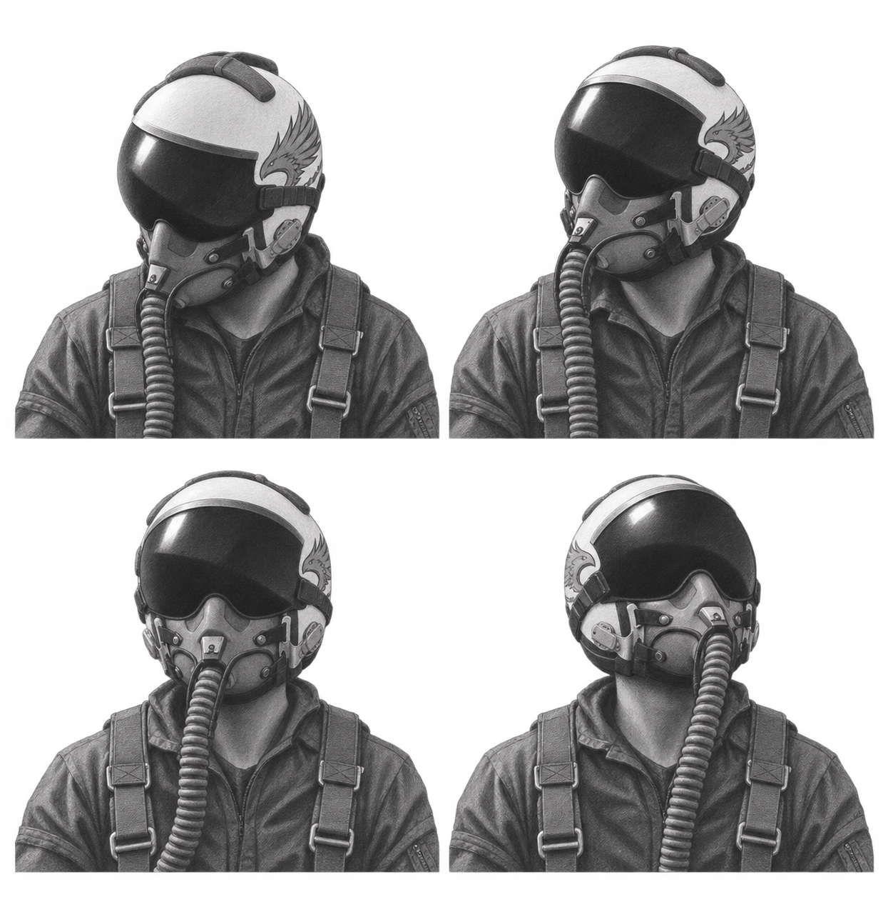
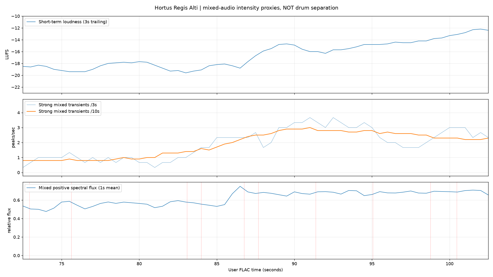
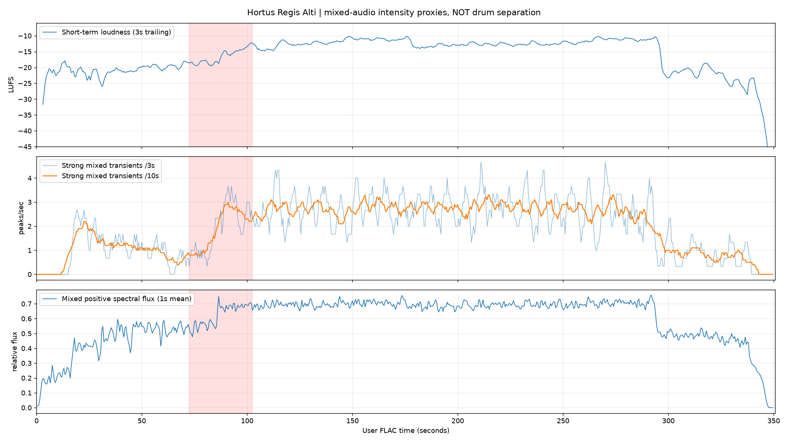

让铅笔画随着音乐动起来
已选灰阶方向 · 动作与节奏试验前段留出呼吸，音乐推进时动作变密，增强段让镜头与环境连续流动。花、浅盆、人物和云分别运动；关键姿态之间维持同一条动作方向。
花独立摆动，根点留在盆内。环境与浅盆保持稳定，让变化从小处开始。
Rex低头、抬头、望向前方。肩部对齐，前景与反射协助衔接完整姿态。
连续轨迹以60Hz计算，云、视角和人物运动各有速度。局部重音跟随音乐，完整动作仍能看清。
这是动作机制示范，尚未作为正式歌词剪辑。画面由低于4K的原画分层合成；三张Rex关键画并非60张手绘帧。D姿态因装备漂移未使用，正式头盔标记仍待精修。MP4为AAC试听，MKV保留48kHz／16-bit FLAC切片。
同一主体，准备连续姿态




查看原曲的节奏分析与全曲变化
测量的是混音瞬态，不是分离鼓轨。此30秒首尾响度约增加5.52 LU，强瞬态密度约0.90→2.43次／秒；下图与画面控制包络分别保留。


分析方法与边界